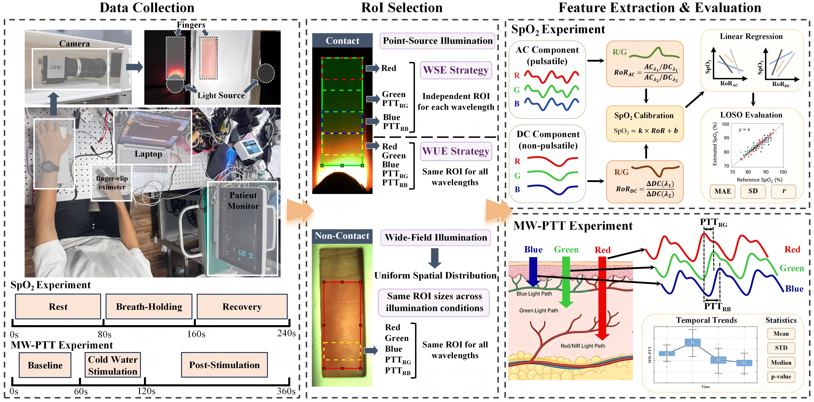

Effects of Illumination Geometry on Multi-Wavelength PPG Imaging
Approach. This study investigated how illumination geometry affects multi-wavelength PPG imaging in 37 participants, focusing on amplitude-based SpO₂ measurements and phase-based multi-wavelength pulse transit time (MW-PTT)
My contribution. I independently designed and implemented a dual-mode imaging system supporting both illumination conditions, conducted human-subject experiments, and developed signal-processing and calibration pipelines. I also compared wavelength-unified and wavelength-specific regions of interest to examine their effects on physiological measurements.
Findings. Contact illumination favored AC-based SpO₂ estimation, while non-contact illumination favored DC-based models and produced larger, more stable MW-PTT responses. The findings demonstrate that illumination geometry fundamentally influences the physiological information captured by PPG imaging and highlight the importance of preserving optical homology for multi-wavelength SpO₂ monitoring.
